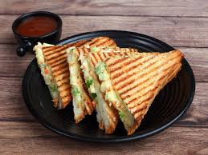
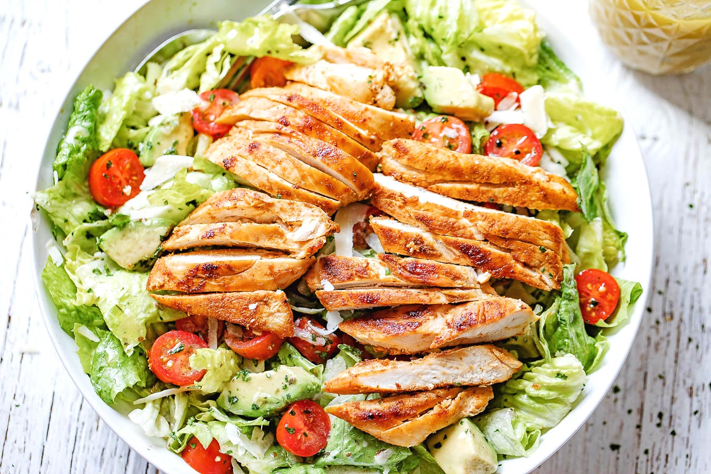
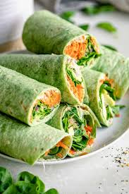

Enjoy these satisfying and delicious lunch ideas!

Grilled Cheese Sandwich, a lunchtime classic!1. Grilled Cheese Sandwich Ingredients: 2 slices of your favorite bread (white, whole grain, or sourdough) 2-3 slices of cheese (Cheddar, American, or Swiss) 2 tbsp butter, softened Optional: add-ins like tomato slices, caramelized onions, or bacon Instructions: Preheat a skillet or griddle over medium heat. Butter one side of each slice of bread. Place one slice of bread (butter side down) in the skillet, then layer the cheese on top. Add any extras (like tomato or bacon) if desired, and top with the second slice of bread (butter side up). Cook until the bread is golden brown and crispy, about 2-3 minutes. Flip the sandwich and cook until the cheese is melted and the other side is golden, another 2-3 minutes. Slice and serve hot.

Refreshing Chicken Salad with a tangy vinaigrette.2. Chicken Salad Ingredients: 2 cups cooked, shredded or diced chicken breast 1/4 cup mayonnaise 2 tbsp Greek yogurt (optional, for creaminess) 1 tbsp Dijon mustard 1/4 cup celery, finely chopped 1/4 cup red onion, finely chopped 1/4 cup sliced almonds or walnuts (optional) 1 tbsp lemon juice Fresh parsley or dill for garnish Salt and pepper to taste Optional: mixed greens or lettuce for serving Instructions: In a large mixing bowl, combine the cooked chicken, mayonnaise, Greek yogurt, and mustard. Add the chopped celery, red onion, nuts, and lemon juice. Season with salt and pepper, then mix everything well. Garnish with fresh herbs. Serve chilled as a sandwich, wrap, or over a bed of greens.

Delicious Veggie Wrap with hummus and fresh vegetables.3. Veggie Wrap with Hummus and Fresh Vegetables Ingredients: 1 large tortilla or wrap (whole wheat, spinach, or regular) 1/4 cup hummus (flavor of your choice) 1/4 cucumber, sliced thin 1/4 bell pepper, thinly sliced 1 small carrot, shredded 1/4 cup baby spinach or mixed greens 1/4 avocado, sliced (optional) 1 tbsp feta cheese (optional) Salt and pepper to taste Optional: a drizzle of olive oil or lemon juice for extra flavor Instructions: Lay the tortilla flat and spread a generous layer of hummus in the center. Layer the cucumber, bell pepper, shredded carrot, spinach, and avocado over the hummus. Sprinkle with feta cheese (if using), and season with salt and pepper. Drizzle a bit of olive oil or lemon juice for extra zest if desired. Fold in the sides of the tortilla and then roll it tightly from the bottom to make a wrap. Slice in half and serve fresh!